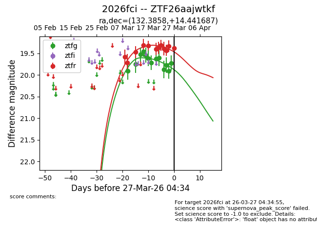
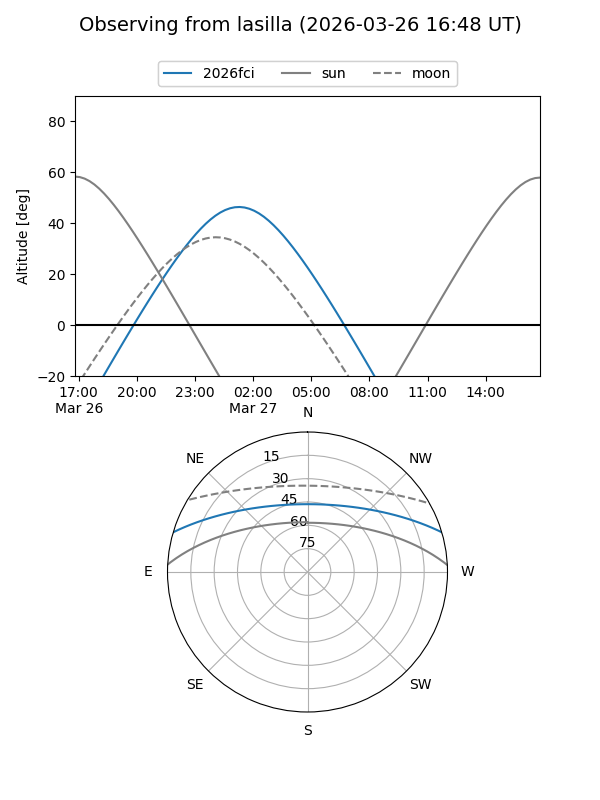
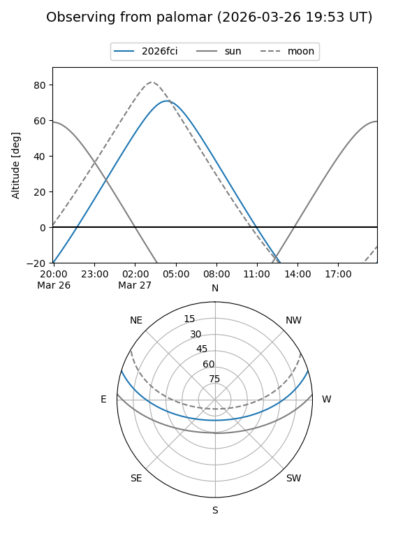
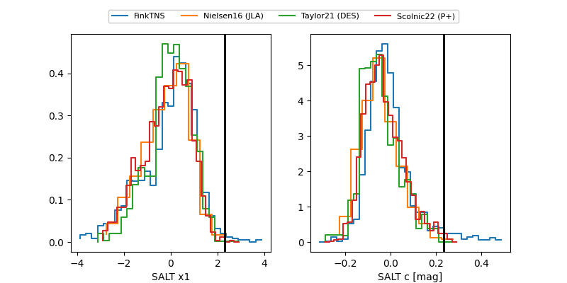

2026fci
Target 2026fci at 2026-03-27 04:37
Aliases and brokers:
FINK: link
Lasair: link
ALeRCE: link
TNS: link
YSE: link
alt names
ZTF26aajwtkf (ztf,fink_ztf)
2026fci (tns,yse)
Coordinates:
equatorial (ra, dec) = 132.3858,+14.44169
equatorial (HMS+DMS) = 08:49:32.60,+14:26:30.07
galactic (l, b) = (212.6369,+32.57941)
Flags:
Photometry:
last ztfg=19.72, ztfr=19.38
13 ztfg, 12 ztfr detections
Lightcurve

Visibility


Additional plots
